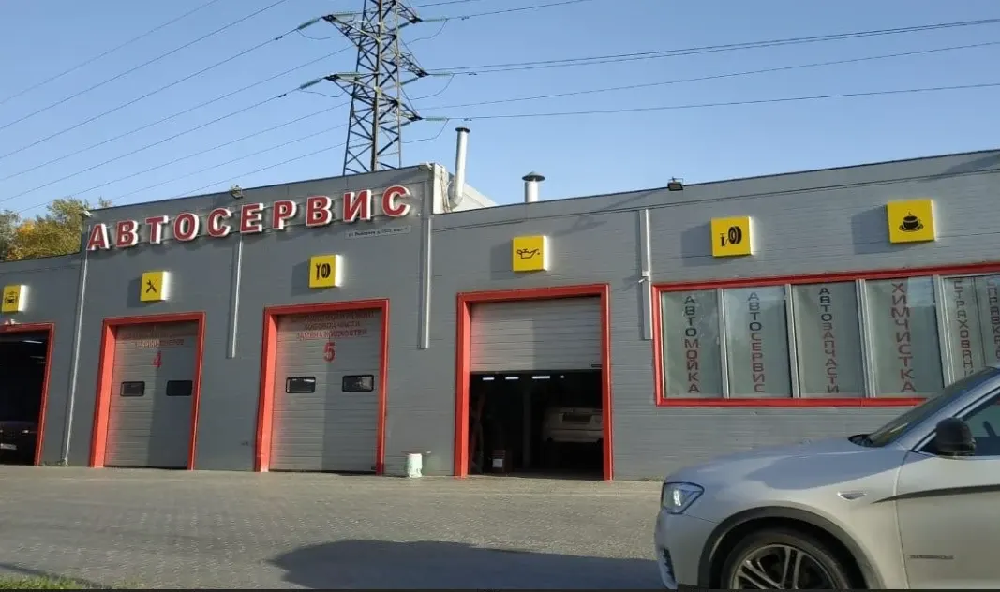
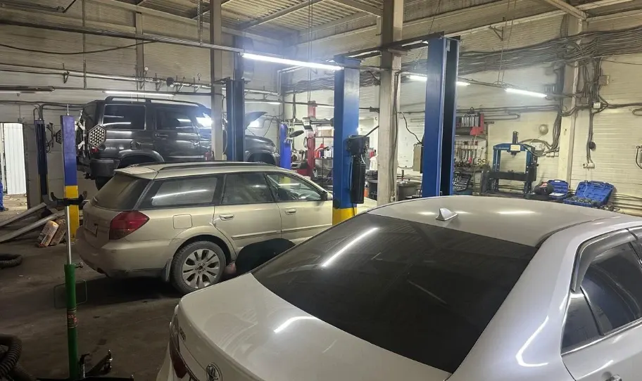
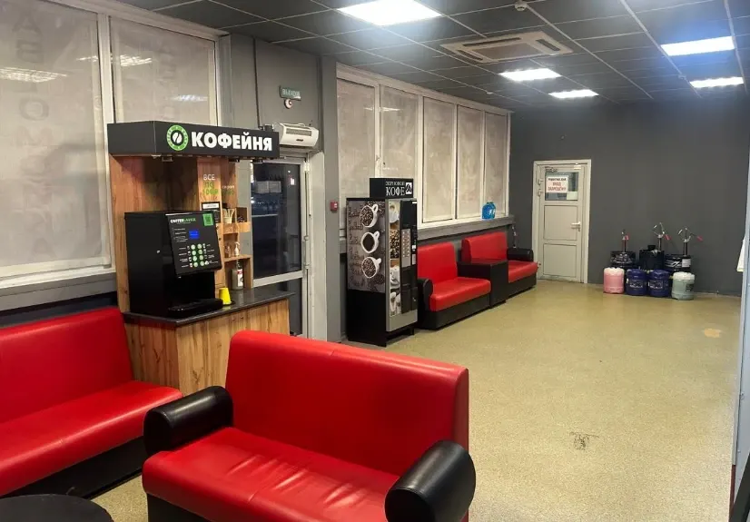
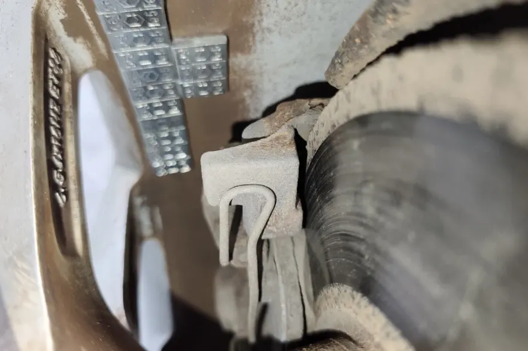

Респект Автосервис
автосервис, шиномонтаж и автомойка
- Рейтинг 4,9 в 2ГИС по 143 оценкам, 76 отзывов
- Выборная, 122/2 к1, ежедневно 10:00–21:00
- Оплата картой, наличными, переводом и по QR-коду

Что рядом с ремонтом
Входит
- Автосервис, шиномонтаж и автомойка в одном месте
- Зал ожидания и кофе с собой
- Видео и фото отчёты по ходу ремонта, по отзывам клиентов
- 12 парковок рядом
- Запись по телефону, в WhatsApp или Telegram
Отдельно, если нужно
- Итоговая цена ремонта зависит от автомобиля и объёма работ
- Стоимость ремонта называют после диагностики
Услуги и цены
Цены с карточки в 2ГИС, обновлены 8 июля 2026. Точную стоимость называют после диагностики.
Диагностика и жидкости
- Компьютерная диагностика1 000 ₽
- Диагностика ходовой части1 000 ₽
- Диагностика спецжидкостей500 ₽
- Замена масла ДВСот 1 000 ₽
- Замена масла АКППот 2 000 ₽
- Замена тормозной жидкостиот 1 500 ₽
- Замена антифризаот 2 000 ₽
Ремонт, агрегаты и мойка
- Замена тормозных дисков и колодокот 3 000 ₽
- Замена амортизаторовот 2 000 ₽
- Замена генератораот 2 500 ₽
- Замена радиатора охлажденияот 3 500 ₽
- Замена коробки передачот 10 000 ₽
- Замена двигателяот 15 000 ₽
- Автомойка комплексот 1 000 ₽
- Шиномонтажуточнить
Цены «от» взяты с карточки в 2ГИС. Цены на шиномонтаж – уточнить.
Четыре шага от записи до выдачи
- 01
Записались
Позвонили или написали в мессенджер, назвали марку и что нужно.
- 02
Диагностика
Мастер смотрит автомобиль и называет стоимость.
- 03
Ремонт
Делаем работу, пока вы ждёте в зале ожидания с кофе.
- 04
Выдача
Забираете машину, рассказываете, что понравилось.



Что говорят клиенты
Всё в одном месте
«Можно без заморочек и беготни сделать все в одном месте» – из отзыва в 2ГИС.
Видео и фото отчёты
«Даже присылали видео и фото отчеты по мере проделывания работ» – из отзыва в 2ГИС.
Быстро
«Очередь двигается быстро, сервис на высоте» – из отзыва в 2ГИС.
Покажут и расскажут
«Всегда все покажут расскажут и сделают четко» – из отзыва в 2ГИС.
Отзывы с 2ГИС
«Отличный автокомплекс, как хорошо что можно без заморочек и беготни сделать все в одном месте, поменяли масло, переобули колеса и помыли машину. 2 часа делов и к зиме готова»
Кристина Михеева · 2ГИС
«Отличная работа, быстрое обслуживание и профессионалы, знающие свое дело!»
Julia · 2ГИС
«Лучший сервис, всегда все покажут расскажут и сделают четко.»
Дмитрий · 2ГИС
Отзывы с карточки в 2ГИС, дословно.
Частые вопросы
Как записаться?
Позвоните по телефону +7 913 920-08-80 либо напишите в WhatsApp или Telegram.
Где вы находитесь?
Новосибирск, Выборная улица, 122/2 к1, Октябрьский район. На территории 12 парковок.
Какие услуги у вас есть?
Диагностика, замена масла и жидкостей, ремонт ходовой, замена агрегатов, шиномонтаж и автомойка.
Когда вы работаете?
Ежедневно с 10:00 до 21:00.
Запишитесь на удобное время
- Адрес
- Выборная улица, 122/2 к1, Новосибирск
- Часы
- Ежедневно с 10:00 до 21:00
- Телефон
- +7 913 920-08-80